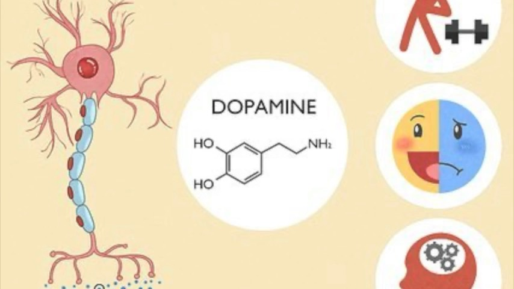

Exercise regularly
Exercise improves how efficiently your brain uses dopamine. Consistency beats intensity.
Home · Module 2 · Understanding Parkinson’sModule 2 · Comprendre la maladie de Parkinson
Module 2 · Understanding Parkinson’sModule 2 · Comprendre la maladie de ParkinsonDopamine plays a big role in Parkinson’s — and you have more say in how you use it than you might think. Learn how to work with your brain, not against it.

Dopamine is a chemical messenger in the brain. It helps with movement, motivation, focus, mood and learning.
In Parkinson’s, the cells that make dopamine slowly decline — but dopamine is not gone. How you use what remains matters more than ever.
Think of dopamine like a bank account
You may have fewer funds, but you can still spend them wisely. Your goal is to protect your dopamine, use it efficiently, and get more benefit from every drop.
Exercise improves how efficiently your brain uses dopamine. Consistency beats intensity.
Dual-task activities (thinking and moving at the same time) strengthen brain pathways.
Do important tasks when you feel sharp. Rest before you get exhausted.
Enough protein, vegetables, fibre and water support dopamine.
Sleep resets your brain chemistry and improves how dopamine works.
Purpose, goals and time with other people support motivation and brain health.
Parkinson’s does not mean your brain is broken. It means your brain needs more intention, structure and consistency.
Small daily actions add up. Keep showing up — it matters.
La dopamine joue un grand rôle dans la maladie de Parkinson — et vous avez plus de contrôle sur la façon de l’utiliser que vous ne le pensez. Apprenez à travailler avec votre cerveau, et non contre lui.

La dopamine est un messager chimique du cerveau. Elle aide au mouvement, à la motivation, à la concentration, à l’humeur et à l’apprentissage.
Dans la maladie de Parkinson, les cellules qui produisent la dopamine diminuent lentement — mais la dopamine n’a pas disparu. La façon dont vous utilisez ce qui reste compte plus que jamais.
Voyez la dopamine comme un compte bancaire
Vous avez peut-être moins de fonds, mais vous pouvez quand même les dépenser judicieusement. Votre objectif : protéger votre dopamine, l’utiliser efficacement et tirer le maximum de chaque goutte.
L’exercice améliore l’efficacité avec laquelle votre cerveau utilise la dopamine. La régularité l’emporte sur l’intensité.
Les activités à double tâche (penser et bouger en même temps) renforcent les voies du cerveau.
Faites les tâches importantes quand vous vous sentez alerte. Reposez-vous avant d’être épuisé(e).
Suffisamment de protéines, de légumes, de fibres et d’eau soutiennent la dopamine.
Le sommeil rééquilibre la chimie de votre cerveau et améliore le fonctionnement de la dopamine.
Avoir un but, des objectifs et des liens avec les autres soutient la motivation et la santé du cerveau.
La maladie de Parkinson ne veut pas dire que votre cerveau est brisé. Cela veut dire qu’il a besoin de plus d’intention, de structure et de régularité.
Les petits gestes quotidiens s’additionnent. Continuez de vous présenter — ça compte.